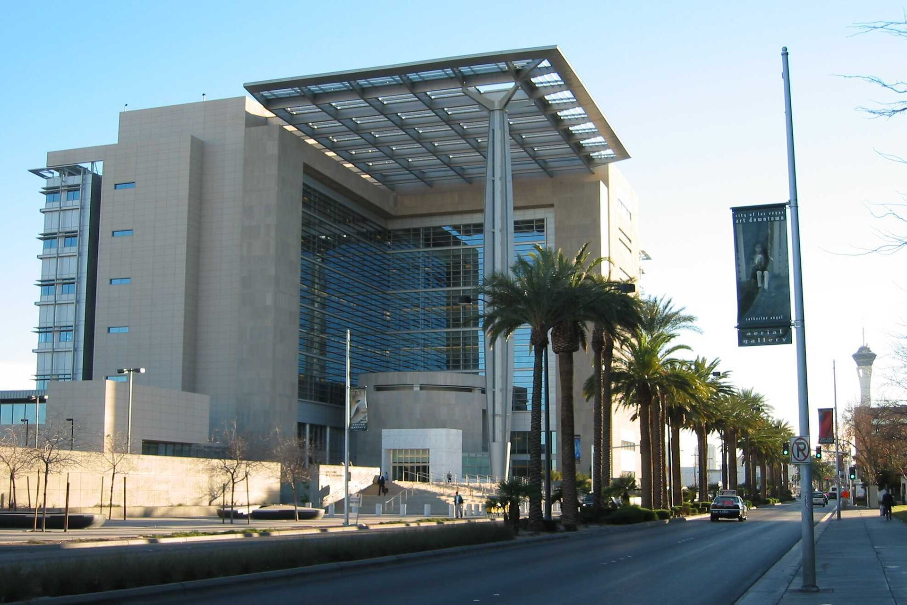

Vol. I · No. 89 · Tuesday, August 18, 2026 · 19 items · ~17 min read
Anthropic names a month and a syndicate, and the long bond climbs to a level it has not touched since the crisis.
Corporate · San Francisco
Anthropic tells investors its revenue run rate passed $65 billion, and sets a listing window ahead of OpenAI
The New York Stock Exchange at Broad and Wall. A listing at $2 trillion or more would be the largest market debut on record. — Wikimedia Commons
Anthropic's annualized surpassed $65 billion at the end of July, according to documents seen by Bloomberg, a sevenfold increase from the $9 billion it was carrying at the close of 2025. The company has told potential investors it expects to go public in September or October, with Morgan Stanley, Goldman Sachs and JPMorgan working on the offering, and the Financial Times reports it will seek a valuation of $2 trillion or more. Both Anthropic and OpenAI have filed . Anthropic is now expected to reach the public market first.
The ladder is steep enough to be worth stating plainly: $9 billion at the end of 2025, $47 billion in May, $65 billion at the end of July, which is $18 billion of annualized revenue added in two months. Preliminary second-quarter revenue exceeded $11.5 billion, more than fourteen times the year-ago quarter and more than double the $4.73 billion booked in the first. Investors expect the year to finish between $100 billion and $120 billion. The company was last valued privately at $965 billion in late May, on a $65 billion primary round.
"The work that gets done is correct more often than the cheaper, less efficient models."
— Harrison Rolfes, , to Axios, August 17
OpenAI's comparable figure, disclosed in an internal message from co-founder and reported last week, is a $40 billion run rate, doubled from $20 billion at the end of 2025. Both Axios and TechCrunch note the two companies may not measure revenue the same way, which is the caveat that will matter most when one of them files publicly and the other does not. The competition is already moving past headline growth to margin: token efficiency, inference contracts, and in-house silicon. OpenAI is on track to draw more than half its revenue from enterprise customers by year end.
Markets · New York
The long bond reaches 5.31 percent, its highest since 2007, and the curve keeps steepening
The 30-year Treasury yield closed Monday at 5.311 percent, the highest since July 2007 and roughly thirteen basis points below the 5.44 percent peak set in the opening months of the financial crisis. The 10-year rose more than two basis points to 4.724 percent and the 2-year about one, to 4.182 percent. The shape is the story. Thirty-year yields are up more than thirteen basis points in August while two-year yields are down twelve, a that reflects supply and inflation risk rather than any improvement in growth.
Last week's auctions set the tone. Treasury sold $25 billion of new 30-year bonds at an of 5.216 percent, the highest for the tenor since 2001, a day after the 10-year drew the highest financing cost since 2007. Bloomberg attributes the move to four things at once: the national debt, the volume of long-dated supply, inflation that has run above target for five years and printed 3.4 percent in July, and a sudden ramp in corporate borrowing to fund the AI buildout. Traders now put the odds of a September hold at roughly 67 percent, up from below 50 percent a month ago. of Barclays told Bloomberg the bank continues to argue against fading the selloff.
News · Washington · cross-spectrum LLCLRR
Trump threatens to bomb Oman as the Iran memorandum lapses, and Kaine moves on war powers
President Trump told Fox News correspondent Trey Yingst on Monday that "if Oman gets in the way, we'll bomb the s--- out of them," and repeated the posture in the Oval Office later that morning, saying of the sultanate that "I don't think they behaved very well, but we'd handle them very easily." is a United States free-trade-agreement partner and has been the back channel to Tehran for decades. Its Musandam exclave forms the southern shore of the .
The threat landed the same morning Iranian foreign ministry spokesman Esmaeil Baghaei said Tehran and Muscat had reached "an understanding regarding the map of the transit route" through the strait, with a joint statement still being finalized. By the afternoon, Senator of Virginia said he would introduce an Oman when the Senate returns from recess, calling the president "increasingly deranged in his one-man campaign to threaten and initiate wars all over the globe" and adding that "his wars are illegal since they are not approved by Congress." Trump said the November midterms have "nothing to do with my thinking" and that he is "not in a hurry."
Framing noteThe Washington Examiner led on the threat as posture, reporting that Trump "sought to portray strength in the war with Iran," while Fox News did not headline the Oman line at all, foregrounding instead Trump's claim that Tehran wants a deal and that Iranians are "good poker players, but they're dying." CBS and NBC ran the threat itself as the news.
AI
Capability, capital, and the rules arriving after both.
AI · Pike County, Ohio
Nvidia guarantees up to $105 billion of land, power and shell for a campus OpenAI will lease for twenty years
The American gas centrifuge cascade at the Piketon, Ohio enrichment plant. The decommissioned site is now the PORTS-Pike campus. — US Department of Energy / Wikimedia Commons
Nvidia said Monday it will provide credit support of up to $105 billion, per a securities filing, on the for the PORTS-Pike Technology Campus in Pike County, Ohio, an eight-gigawatt site that will build, own and operate and that OpenAI will lease for twenty years. The guarantee covers an initial 4.25 with an option on the remaining 3.75. Nvidia is the exclusive compute provider and is separately investing $1.5 billion in SB Energy, joining SoftBank Group and OpenAI on the cap table.
The site is the decommissioned , developed with AEP Ohio, the Department of Energy and the Department of Commerce. SB Energy and SoftBank will build at least ten gigawatts of new generation and put at least $4.2 billion into regional grid infrastructure under a structure meant to keep the cost off ratepayers. Capacity phases in from 2028, with the first 800 megawatts arriving largely on existing AEP lines, across a six-year buildout carrying 35,000 construction jobs and 2,500 permanent ones. Goldman Sachs and JP Morgan advised SB Energy; Morgan Stanley advised Nvidia. OpenAI says it "will begin paying only as completed capacity becomes available for lease."
AI · London
England's solicitors regulator opens investigations into AI misuse and puts supervisors on the hook
The published a on Monday covering every firm and individual it regulates, disclosing that it received 42 reports of potential AI misuse between July 2025 and July 2026 and has "a number of ongoing investigations." Senior members of the judiciary reported possible rule breaches arising from hallucinated citations, and several solicitors have self-reported reliance on AI that produced inaccurate or misleading content. The notice states that use of AI "does not diminish or transfer your professional responsibilities."
Two provisions do the real work. The first extends liability upward: those who supervise junior or non-authorised colleagues can face action if false citations reach the court without adequate review, which converts an individual lapse into a management failure. The second concerns confidentiality, warning that "both paid for and free-to-use AI tools may not provide the contractual and technical safeguards needed to maintain client confidentiality," and flagging "the permanent that can occur as a result." In-house lawyers get a specific caution that employer-built tools may not be designed for legal work. , the SRA's executive director for strategy and policy, said the technology "does not change the professional standards expected of solicitors and law firms."
AI · Las Vegas
A bookseller hid an AirTag in a rare book, and it led to a warehouse where the spines come off first
A bookseller who received an anonymous order for 1,000 titles on the marketplace agreed to place an Apple AirTag between the pages of one volume, and of 404 Media tracked the shipment to an Amazon warehouse in Nevada. The facility, known internally as and marked with a logo of a dinosaur holding a book, is where staff strip the spines off incoming books so the pages can be fed rapidly through a scanner. Workers scan the ISBN of every book processed. Amazon told 404 Media it buys books "through commercial channels to help develop and improve the products and services our customers use."
Out-of-print and hard-to-find titles are prized as training data precisely because they are not already on the internet and carry no AI-generated text. The practice became public through the litigation against Anthropic, which revealed industrial cutting and scanning of millions of physical books, and where the court treated as transformative and therefore not infringing. That holding is now operating as a manufacturing specification. The bookseller's objection, quoted by 404: "There's monetary value, obviously, but there are a lot of other types of value. There's historical value, intellectual value, sentimental value. All sorts of things, and all of those the AI companies don't care about."
Markets & Deals
A locked box, a refreshed filing, and a defence anchored on net asset value.
Corporate · Chicago
Madison Air pays $5.4 billion for a German family fan maker, with an underwritten bridge and no financing condition
The ebm-papst production site at Hollenbach. The group keeps its Mulfingen headquarters and core research under the deal. — Fischer & Friends / Wikimedia Commons, CC BY-SA 4.0
Madison Air Solutions agreed Monday to buy from its three founding shareholder families at an enterprise purchase price of $5.444 billion, or 4.775 billion euros, against a headline enterprise value of 5.1 billion euros. Net of expected future tax savings the effective price is $5.021 billion. That is 14.6 times ebm-papst's forecast 2026 adjusted EBITDA of roughly $343 million, or ten times including the $160 million of annual run-rate cost synergies expects by year three. The target carries about $2.8 billion of 2026 revenue and adds roughly $30 billion to Madison Air's addressable market.
The structure is the part worth reading. It is a share purchase agreement, the European convention that fixes price off a historical balance sheet date and relies on leakage covenants instead of completion accounts. Madison Air holds a with fully underwritten commitments from UniCredit and Wells Fargo, and the acquisition is not subject to any financing condition, which is what a seller extracts when it is a family and wants certainty rather than optionality. Pro forma net leverage is guided below 4.0 times at closing, coming down to roughly 2.5 times within two years. Close is expected around year end, subject to regulatory approval.
Corporate · New York
General Atlantic revives its IPO three years after shelving it, with JPMorgan leading
has hired JPMorgan to lead a renewed initial public offering, joined by Goldman Sachs and Morgan Stanley, and a listing could come as soon as this year, Bloomberg reported Monday. The firm filed confidentially in December 2023 and shelved the deal on inflation and rising rates; it has now refreshed that with the Securities and Exchange Commission. It manages about $129 billion across all strategies as of June 30 and employs more than 900 professionals in twenty countries.
The portfolio explains the timing. General Atlantic holds Anthropic alongside OneStream, Nurix and OSEA, and its earlier positions include Airbnb, Uber and Shein. It has already held preliminary meetings with potential investors, the that precedes a public flip. The wider window is narrow but deep: EY counts United States IPO proceeds up 646 percent year over year to $128 billion through June 30, on a 35 percent decline in deal count, which is to say the money is concentrated in a handful of very large listings. expected exactly one American pricing in the week beginning Monday.
Corporate · New York
Genco answers a withdrawn hostile bid with a net asset value number and a governance indictment
Genco Shipping & Trading published an open letter to shareholders on Monday, three days after Diana Shipping withdrew an offer that had run nine months through four successive proposals, a proxy fight and a hostile tender. Diana had moved from $20.60 a share in cash in November 2025 to $23.50 in March, launched a tender at that price in May, then raised to $24.80 plus one Diana share. Genco's counter-framework, conveyed on August 13, was $27.50 in cash plus three Diana shares, which Genco values at about a dollar each on a pro forma basis. and lead independent director Kathleen C. Haines signed the letter.
Diana characterized that framework publicly as worth $36.91 per Genco share, using its own August 13 close of $2.47, and said it would leave Genco holders with roughly 47 percent of the combined company. Genco calls the figure "grossly inflated" and anchors instead on a of approximately $27.50 a share, citing independent broker valuations and the median of five sell-side estimates. It disputes Diana's intention to deduct Genco's $0.80 second-quarter dividend from consideration, and attacks Diana's structure, insider control and related-party transactions. Jefferies advised Genco, with and Sidley Austin as counsel and Morgan Stanley as special adviser to the board.
Law & the Courts
A vacancies ruling, a star practice, and a defamation suit on today's ballot.
Law · San Francisco
The Ninth Circuit says the Attorney General cannot make an acting US attorney out of a first assistant to an empty office

The Lloyd D. George Federal District Courthouse in Las Vegas, home of the District of Nevada. — US Department of Justice / Wikimedia Commons
A unanimous Ninth Circuit panel held Monday in United States v. Jackson that Attorney General Pam Bondi cannot create an Acting United States Attorney by designating someone first assistant to an office that is already vacant. The 's automatic-succession rule, the court held, "applies only to a first assistant who held that position at the time the vacancy arose." Judge Eric Miller, a Trump appointee, wrote for himself, Judge Sidney Thomas and District Judge Stanley Blumenfeld, also a Trump appointee, sitting by designation.
The second holding closes the alternative route. Because Section 3347 makes the Vacancies Act "the exclusive means for temporarily authorizing an acting official," the Attorney General cannot assemble a de facto acting US attorney by delegating the complete set of a US attorney's powers to one person. The panel affirmed the disqualification of from supervising three Nevada prosecutions and dismissed the defendants' cross-appeals for lack of . Citing the , the opinion catalogues that every court to reach these tactics has found them unlawful, including the Third Circuit in Giraud and district courts in California, Virginia, New York and New Mexico. The Justice Department says it will seek Supreme Court review.
Law · Los Angeles
One Greenberg Traurig litigator has become the default lawyer for famous women in trouble
, co-chair of 's national media and entertainment litigation practice and a former Justice Department trial attorney, added Selena Gomez to a client list that already ran through Britney Spears and FKA twigs. Gomez, her mother Mandy Teefey and the entrepreneur Daniella Pierson are being sued by two entities that invested nearly $1.2 million in Wondermind, the mental-health company the three co-founded, on allegations they were misled about its leadership, infrastructure and prospects. Rosengart says he is filing a motion to dismiss, calling the fraud allegations "completely meritless, both factually and legally."
The through-line across the matters is the enforceability of silence. Rosengart represents FKA twigs, who settled sexual battery and assault claims against Shia LaBeouf in June 2025, was met with an arbitration demand in December, and has now sued asking a California court to declare portions of the unenforceable. He was retained by Spears in 2021, moved to suspend her father two weeks later, and saw the terminated within months. What he has built is unusual inside a 3,100-lawyer firm: a personal practice whose asset is a reputation rather than an institutional relationship.
Law · South Florida · Miami
A Miami-Dade judge sued her challenger for defamation, and the challenger answered the day before the vote
Destiny Alvarez moved Monday to dismiss the defamation complaint filed against her by the judge she is trying to unseat, Miami-Dade Circuit Judge Mavel Ruiz, and asked for monetary sanctions on the ground that the suit attacks protected political speech. Their race is on today's primary ballot in the . Ruiz's complaint alleges that Alvarez, her husband, four political committees, a political operative and a consultant conspired to influence a nonpartisan judicial race with a smear campaign claiming she tried to block the Trump presidential library.
The underlying facts are more complicated than the mailers. Ruiz temporarily blocked Miami Dade College's land transfer for the roughly $950 million library, siding with the historian Marvin Dunn on an alleged notice failure, then dismissed the suit once the college re-voted with proper notice. She was later from the case after an appellate panel found she showed bias by hugging Dunn following a December hearing. One committee named in the complaint, New Vision for Our Courts, was newly formed, took in about $29,000 and funded a June 25 mass-text campaign driving voters to an anti-Ruiz website. Six Miami-Dade judicial seats are contested this cycle against roughly 27 that drew no challenger.
The World
A doctrine change in Tehran, a sequencing rule in Jerusalem, a burning port on the Danube.
News · Tehran · cross-spectrum LLCR
Iran says its defence will now take an offensive form as the memorandum lapses and Hormuz traffic collapses
The Strait of Hormuz from orbit, Iran to the north and Oman's Musandam Peninsula to the south. Crossings fell from nineteen on August 11 to three on August 16. — NASA Terra/MODIS
Brigadier General Yadollah Javani, political deputy of the , told Fars News on Monday that "from now on, every action we take, although it has a defensive nature, must take on an offensive form," and that adversaries "should expect strategic surprises." He tied the shift to appointments and directives issued last week by Supreme Leader . A senior Iranian official separately told Reuters that Tehran has set a deadline of several weeks for full implementation of the June memorandum and will not tolerate an indefinite American naval blockade.
The traffic numbers make the point without rhetoric. Crossings of the Strait of Hormuz fell from nineteen on August 11 to three on August 16, down 19.5 percent week over week according to Marine Traffic and , with 51 of 95 total crossings using the Iranian-designated route. Central Command said it has redirected 64 commercial vessels under the , disabled three and boarded two. Brent rose 2.7 percent to $90.87 and West Texas Intermediate 2.6 percent to $84.50. Iran's foreign ministry dismissed the deadline framing outright: Esmaeil Baghaei said the United States began violating the memorandum shortly after its June 18 signing, so "the 60-day issue essentially has no relevance."
Framing noteCBS reported the shift in Iran's own framing, noting Javani's insistence that Iran "had never initiated a war." Fox News ran the same Reuters sourcing under a headline about Trump confirming a Revolutionary Guard back channel and calling for Iran's "white flag of surrender," reading the posture change as a prelude to capitulation rather than escalation.
News · Jerusalem · cross-spectrum LLCLRR
Four hours in Jerusalem produce a sequencing rule: no Israeli redeployment until Hamas is fully disarmed
Jared Kushner, director and former British prime minister Tony Blair met Prime Minister Benjamin Netanyahu for more than four hours on Monday. A Board official said afterward that "it was agreed that there will be no IDF redeployment from Gaza until Hamas is fully disarmed and all of Gaza is demilitarized, every weapon, light and heavy, and every tunnel," and that Israel "retains its full right of self-defense" if Hamas rearms. The Board told Netanyahu that Hamas has committed to disarm fully and cease military activity, including tunnel digging.
Two working groups were agreed, one on security and and one on basic needs for Gaza's population. The meeting followed Kushner's two-hour session with Hamas chief in Egypt on Sunday. The dispute is sequencing: Israel wants disarmament first, Hamas wants withdrawal and disarmament in parallel, and Netanyahu rejected the fifteen-point roadmap last week. Ten months have passed since the ceasefire was declared with no tangible change on the ground, and Israeli elections are ten weeks away.
Framing noteFox News framed the day as coercion of Hamas, headlining Kushner's "stark ultimatum: disarm or Israel gets US backing to finish the job." The Washington Post reported the same meeting as a failure, saying the parties made little progress. NPR located the obstacle in Israeli domestic politics, with Daniel Estrin reporting that Netanyahu "does not want Israelis to think he's giving any concessions to Hamas" ten weeks from a vote.
News · Izmail, Ukraine · single-tier coverage C
Russia burns Ukraine's Danube export route at Izmail as a Ukrainian missile kills six in Belgorod
An overnight Russian attack on port infrastructure in the district of Odesa region set fires that damaged a Togo- civilian vessel and injured four people, the regional governor said. Izmail sits close to the Romanian border and is Ukraine's largest Danube port. The assault ran roughly three and a half hours and hit warehouses and production buildings. Russia's defence ministry described the target instead as a berthing terminal for vessels carrying military cargo, hangars holding Western equipment and depots for naval drones. Reuters said it could not verify the claim.
At least 128 strike drones were launched against Ukraine that night, killing four and wounding nineteen, including one that destroyed a parcel depot in Kramatorsk and killed an employee. Monday morning a Ukrainian missile struck Koloskovo in 's Valuysky district, about fifteen kilometres from the border, killing at least six and wounding four including a fourteen-year-old. The United Nations counted 437 civilians killed in Ukraine in July, the highest monthly toll since May 2022; Russian authorities reported 79 civilians killed by Ukrainian attacks over the same month. Ukrainian grain exports fell 75 percent in the first two weeks of August.
Entertainment & EASL
A billion-dollar bond, a publisher who will not settle, and a stadium on the ballot.
Corporate · Los Angeles
Paramount asks the twelve states suing it to post a $1.88 billion bond, and Bonta calls it blackmail
The Melrose Avenue gate of Paramount Pictures Studios. The state suit is the only remaining obstacle to the $111 billion Warner acquisition. — Wikimedia Commons
Paramount Skydance filed Monday asking the court to require the state plaintiffs challenging its $111 billion acquisition of Warner Bros. Discovery to post a bond of $1,884,726,092. Twelve attorneys general led by California's sued on July 13 to block the deal; the Writers Guild of America filed separately, and Paramount's request sweeps in both. The number is built from the merger's , which obliges Paramount to pay Warner shareholders $7 million a day if the deal does not close by September 30. By the time final briefs land in April 2027, Paramount calculates it will have paid $1.3 billion in fees it cannot recover.
Trial is set before Judge Araceli Martínez-Olguín for twelve court days beginning March 2, 2027, with fact discovery opening Monday and closing January 8. Paramount says every global regulator including the Justice Department had cleared the deal as of Friday, leaving the state suit as the only remaining obstacle, and argues the states "had more than six months to investigate the transaction prior to filing the complaint." Bonta's answer is that Paramount stipulated to the schedule without conditioning that stipulation on a bond, and that the ticking fee was its own drafting choice: the companies "knew this merger would undergo regulatory review; they knew it was not a done deal; and they chose to include it anyway." Paramount's head of legal affairs is .
Culture · New York
Round Hill sues Suno and Anthropic over AI training and says it will not settle
filed two copyright suits on Monday, one against the music generator Suno and one against Anthropic, over the use of its catalog to train models. Each complaint identifies more than 500 songs, including "Iris," "Total Eclipse of the Heart" and "I Got You (I Feel Good)," and says the cases could expand to thousands more with damages that could "conceivably exceed $1 billion." Counsel is , the Nashville litigator who won the "Blurred Lines" verdict.
The posture is what distinguishes it. Universal, Warner and Sony all sued Suno in 2024; Warner settled in November and licensed its catalog, while Universal and Sony continue to litigate. Round Hill's chief executive Josh Gruss says the company will try both cases and will not accept a resolution "that leaves songwriters and artists deprived of their rightful share of compensation," adding that "as an independent music company, we have the freedom and obligation to say that plainly and to act on it." Anthropic is already defending a January suit by Concord, Universal Music Publishing and ABKCO covering more than 20,000 songs and seeking roughly $3 billion. Neither defendant returned a request for comment.
Culture · San Diego
MLB owners unanimously approve a record $3.9 billion sale of the Padres
Major League Baseball owners voted unanimously on Monday to approve the sale of the San Diego Padres to José E. Feliciano and his wife Kwanza Jones at a $3.9 billion valuation, breaking the record of $2.42 billion Steve Cohen paid for the Mets in 2020. The couple will hold a reported 40 percent, with Feliciano as . He co-founded in 2006, which now manages more than $90 billion and funded much of the $3.16 billion purchase of Chelsea in 2022, but MLB caps private equity ownership at 30 percent of a franchise, so the stake is being funded from personal wealth.
ran the process from November 2025. Dan Friedkin, Joe Lacob and Tom Gores lost out, and three bids came in at or above $3.5 billion. The economics underneath the price are modest: 2025 gross revenue of $530 million against roughly $20 million of EBITDA, eleventh of thirty clubs on net revenue. Petco Park drew 3.4 million fans last year, second in baseball, with season tickets capped above 25,000 and sold out four straight years despite prices up more than 50 percent since 2022. The sale followed litigation among the heirs of the late owner Peter Seidler, whose widow sued his brothers in Texas probate court for breach of fiduciary duty as trustees of the .
Culture · South Florida · Miami
Miami votes today on handing the Marine Stadium to Oak View Group for up to forty years
Referendum 2 on today's Miami ballot would grant , a subsidiary of , with the local partner Breakwater Hospitality Group, a management contract over the city-owned Miami Marine Stadium running up to forty years: a ten-year term plus three renewal options. Oak View would contribute $10 million toward restoration. The city would take 93 percent of event sales after a $33,333 monthly management fee and 85 percent of sponsorship revenue; the operator takes a $400,000 annual base fee plus 7 percent of gross revenue and food and beverage and 15 percent of sponsorship and premium seating. A special bond of $65 million to $85 million for full restoration would follow.
The 6,500-seat stadium opened on in 1963, hosted Queen, Ray Charles and the Beach Boys, and closed after Hurricane Andrew in 1992. It was designated a historic site in 2008 and added to the in 2018, and has sat unrestored throughout. A separate item on the November 3 ballot would lease 27.6 adjacent acres of marina to Virginia Key LLC, a joint venture of RCI Marine Group and Suntex Marinas, for 45 years extendable to 75.
Compiled by Matthew Yellin · mattyellin.com · Est. May 2026 · A cross-spectrum brief drawn each morning from wires, filings, and the trade press